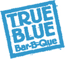

← Back to index
Beef Short Ribs Braised in BBQ Red Wine Sauce

Servings: 4
Ingredients
- The Ribs:
- ¼ cup flour
- 1 tablespoon Creole Seasoning
- 8 beef short ribs (3 1⁄2 to 4 pounds)
- ¼ cup olive oil
- 1 large onion, sliced into thin slivers
- 1 green pepper, sliced into thin slivers
- 2 jalapeño peppers, seeded and minced
- 3 bay leaves
- Kosher salt and black pepper
- 4 large cloves garlic, minced
- 1 cup dry red wine
- 1 ¼ cups Mutha Sauce
- 1 teaspoon dried thyme
- ¼ cup water
- The Garnish:
- 2 teaspoons chopped fresh Italian parsley
Instructions
- Preheat the oven to 325°. Mix up the flour and Creole Seasoning. Roll the ribs around in it til they’re coated on all sides. Fire up a skillet over medium-high heat and add the oil. Brown the ribs til crusty on all sides, about 5 minutes per side. (If the ribs don’t all fit in the pan at once without crowding, do them in batches.) Move the ribs to a baking pan just big enough to hold them close.
- Pour off all but 2 tablespoons of the hot oil from the skillet. Toss in the onions, green peppers, jalapeños, and bay leaves and cook, scraping in all those tasty brown bits clinging to the bottom of the pan. Season with a big pinch of salt and a dash of pepper, and cook til soft and light brown; then add the garlic and cook a minute more.
- Pour in the red wine and let it bubble for 1 minute while scraping the skillet again. Add the Mutha Sauce, thyme, and water and simmer for a couple of minutes til blended.
- Douse the ribs with the sauce and cover the pan snugly with foil. Bake for 2 hours. Remove from the oven and uncover. Skim off the fat floating on the surface. Stir up the sauce and taste for seasonings. Give the ribs a flip, cover them up again, and pop them back in the oven for another half hour or so, til they’re fork tender. Pull the ribs out of the oven, and fish out and discard the bay leaves. Reduce pan sauce if necessary. Serve each person 2 hot and steamy, well-sauced ribs sprinkled with parsley.